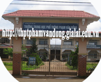
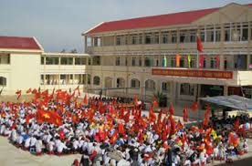
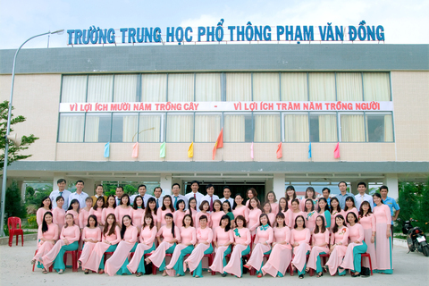
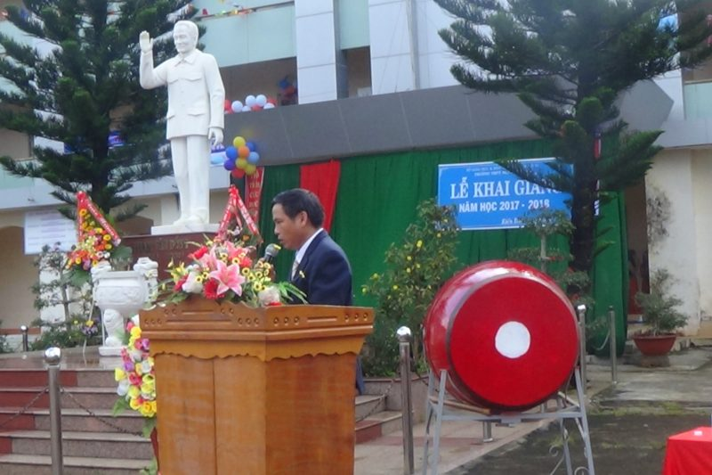

 Tiền thân của trường THPT Phạm Văn Đồng hiện nay là trường Phổ Thông cấp 2+3 ĐăkR’Lấp, được thành lập theo quyết định số 491/QĐ-UB ngày 24 tháng 8 năm 1992 của Chủ Tịch UBND Tỉnh ĐăkLăk. Đến tháng 5 năm 2003 trường Phổ Thông cấp 2+3 ĐăkR’Lấp, được đổi tên thành Trường Trung Học Phổ Thông ĐăkR’Lấp theo Quyết định số 1308/QĐ-UB, ngày 09 tháng 5 năm 2003 của Chủ Tịch UBND Tỉnh ĐăkLăk. Đến tháng 3 năm 2007 trường Trung Học Phổ Thông ĐăkR’Lấp, được đổi tên thành Trường Trung Học Phổ Thông Phạm Văn Đồng, theo Quyết định số 320/QĐ-CTUBND, ngày 14 tháng 3 năm 2007 của Chủ Tịch UBND Tỉnh Đăk Nông.
 Trường THPT Phạm Văn Đồng được nhà nước giao nhiệm vụ giúp học sinh trong địa bàn Thị Trấn Kiến Đức, xã Kiến Thành, xã Quảng Tín và xã ĐăkRu thuộc huyện ĐăkR’Lấp củng cố và phát triển những kết quả của giáo dục Trung Học Cơ Sở, hoàn thiện học vấn phổ thông và những hiểu biết thông thường về kỹ thuật và hướng nghiệp, có điều kiện phát huy năng lực cá nhân để lựa chọn hướng phát triển, tiếp tục học đại học, cao đẳng, trung cấp, học nghề hoặc đi vào cuộc sống lao động.
 Sứ mệnh của trường THPT Phạm Văn Đồng là: Tạo dựng được môi trường học tập có nề nếp, kỷ cương tốt. Xây dựng truyền thống nhà trường có chất lượng giáo dục cao, tạo mọi điều kiện để mỗi học sinh được phát triển năng lực cá nhân và tư duy độc lập, sáng tạo.
 Tầm nhìn của trường THPT Phạm Văn Đồng: Đến năm 2015, trường THPT Phạm Văn Đồng trở thành một ngôi trường giáo dục có chất lượng cao, đạt chuẩn chất lượng; đào tạo những con người mạnh khoẻ về thể chất, mạnh mẽ về trí lực, đáp ứng được sự phát triển kinh tế-xã hội của tỉnh nhà. Là một trong những trường hàng đầu của tỉnh, giáo dục học sinh trở thành những công dân mang bản sắc văn hóa dân tộc rõ nét, có nhân cách và trí tuệ ngang tầm thời đại. Nơi giáo viên và học sinh luôn có khát vọng vươn tới đỉnh cao của trí tuệ.
Giá trị cốt lõi của nhà trường
– Giá trị truyền thống tốt đẹp của dân tộc được tôn vinh.
– Học tập là nhu cầu cơ bản, phát triển xã hội học tập.
– Người học luôn ở vị trí trung tâm.
– Tôn trọng khả năng và tính sáng tạo cá nhân.
– Năng động, thích nghi cao, tích cực đổi mới và sáng tạo.
– Uy tín, dân chủ, trách nhiệm và hiệu quả.
Tóm tắt giá trị cốt lõi: “ Đoàn kết – Bình đẳng – Thân thiện – Tự trọng
Hợp tác – Trách nhiệm – Sáng tạo – Khát vọng vươn lên”